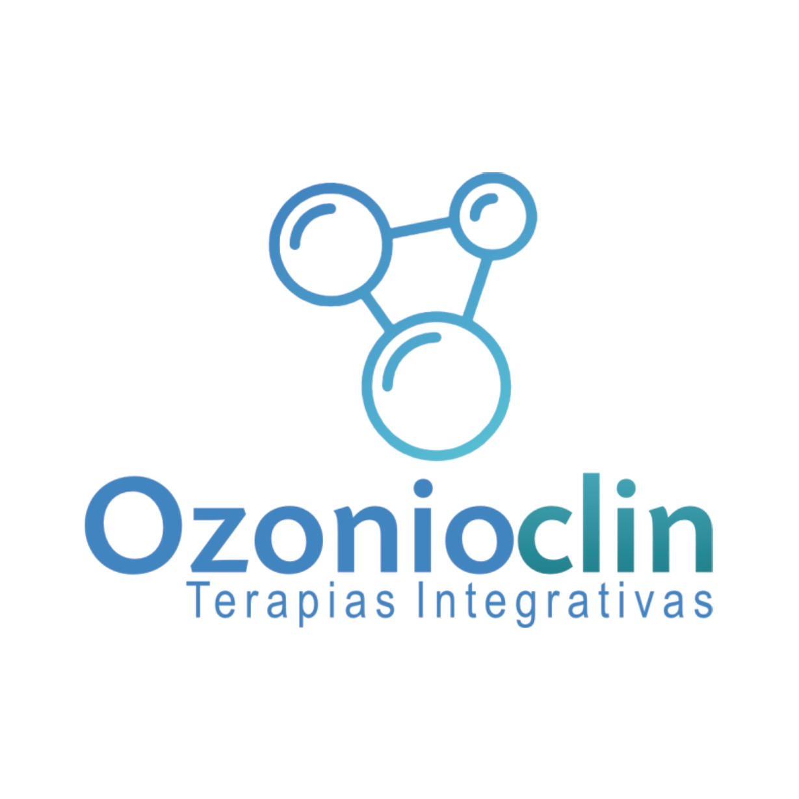

Ozonioterapia, biorressonância, soroterapia e terapias integrativas em Rondonópolis
Desde 2022
trajetória construída com acolhimento, ética e atenção individual.
Rondonópolis
clínica em localização estratégica para atendimento na cidade e região.
7h às 11h | 13h às 17h
horários organizados para um contato mais próximo e personalizado.
Terapias integrativas com escuta humana e atenção individual.
A Ozonioclin une atendimento humanizado, acompanhamento individual e diferentes terapias complementares para quem busca mais equilíbrio, bem-estar e qualidade de vida. Desde 25 de janeiro de 2022, a clínica atende Rondonópolis com uma proposta acolhedora, ética e próxima.
Atalhos mais buscados:

Ozonioclin
Terapias Integrativas
Atendimento voltado para quem deseja cuidado complementar com olhar amplo sobre o corpo, a rotina e o bem-estar.
- Atendimento acolhedor e individualizado
- Terapias com base tecnológica e acompanhamento próximo
- Procedimentos voltados ao cuidado e à qualidade de vida
Em destaque
Biorressonância quântica
Cuidado personalizado
Cada atendimento é conduzido com escuta, atenção individual e foco no que faz sentido para a pessoa.
Recursos terapêuticos variados
A clínica reúne diferentes técnicas para ampliar as possibilidades de cuidado complementar.
Olhar integrativo
Ozônio, biorressonância, microscopia de campo escuro e terapias biofísicas em uma mesma jornada de atendimento.
Base em Rondonópolis
Endereço de fácil acesso para pacientes da cidade e de municípios vizinhos.
Tratamentos em foco
Terapias que ajudam a construir uma rotina de cuidado mais ampla e mais próxima da sua necessidade.
A Ozonioclin trabalha com procedimentos complementares escolhidos de forma individualizada, sempre com atendimento atencioso e orientação clara para cada etapa.
Cuidado complementar
Ozonioterapia e hidrozonioterapia para uma jornada terapêutica com olhar individual.
A Ozonioclin oferece ozonioterapia e hidrozonioterapia como parte de um atendimento integrativo, acolhendo cada pessoa com orientação próxima e uma condução cuidadosa durante o processo.
- Atendimento individualizado para diferentes necessidades de cuidado complementar.
- Integração com outras terapias oferecidas na clínica quando fizer sentido para a jornada da pessoa.
- Ambiente preparado para receber com calma, escuta e profissionalismo.
Leitura integrativa
Biorressonância e microscopia para ampliar a observação sobre o cuidado.
A clínica também trabalha com biorressonância e microscopia de campo escuro, recursos que fazem parte de uma abordagem complementar para quem busca olhar mais amplo sobre o próprio bem-estar.
- Exames e terapias biofísicas integrados à proposta de atendimento da clínica.
- Explicação clara durante o processo para que o paciente entenda cada etapa.
- Atendimento próximo para quem procura alternativas complementares em Rondonópolis.
Aplicação local
Laserterapia e podiatria com atenção aos detalhes do atendimento.
Em procedimentos localizados, a Ozonioclin trabalha com laserterapia e podiatria dentro de uma rotina de cuidado acolhedora, pensada para atender pessoas que valorizam proximidade e acompanhamento.
- Atendimento cuidadoso em procedimentos que pedem observação e delicadeza.
- Possibilidade de integrar o cuidado com outras terapias complementares da clínica.
- Condução humanizada para todas as idades.
Suporte regenerativo e complementar
PRP, PRF, nutrição celular e terapias biofísicas reunidos em um atendimento que valoriza a pessoa por inteiro.
Plasma Rico em Plaquetas, Plasma Rico em Fibrina, nutrição celular com soroterapia, hidrogênio molecular e terapias complementares fazem parte do portfólio da Ozonioclin para quem busca um plano de cuidado mais amplo.
- Combinação de técnicas conforme a necessidade observada em consulta.
- Atenção ao histórico, à rotina e ao objetivo de cada paciente.
- Clínica em constante evolução, sempre buscando aperfeiçoamento e inovação.
Portfólio de atendimento
Serviços oferecidos pela Ozonioclin para quem busca terapias integrativas em Rondonópolis.
Conheça as frentes que fazem parte do dia a dia da clínica e ajudam a construir um cuidado complementar mais personalizado.
Ozonioterapia
Atendimento complementar com foco em acolhimento, proximidade e condução individual.
Curativos
Cuidado local com acompanhamento atencioso e observação cuidadosa em cada etapa.
Hidrogênio Molecular
Mais uma frente complementar dentro da proposta terapêutica integrada da clínica.
Plasma Rico em Plaquetas (PRP)
Procedimento realizado com orientação próxima e atendimento cuidadoso.
Plasma Rico em Fibrina (PRF)
Alternativa complementar integrada ao olhar individualizado sobre cada pessoa.
Nutrição Celular e Soroterapia
Atendimento pensado para quem busca cuidado complementar com atenção personalizada.
Biorressonância
Leitura terapêutica integrada à proposta da clínica de observar o corpo de forma ampla.
Hidrozonioterapia
Recurso complementar que amplia as possibilidades de atendimento dentro da clínica.
Podiatria
Atendimento local com técnica, atenção aos detalhes e condução acolhedora.
Microscopia de Campo Escuro
Ferramenta complementar para ampliar a observação no contexto do cuidado integrativo.
Terapia Neural
Abordagem complementar dentro de um atendimento feito com ética e proximidade.
Terapias Biofísicas e Laserterapia
Recursos terapêuticos associados a uma jornada construída conforme a necessidade do paciente.
Ambiente real da clínica
Atendimento humanizado
Uma proposta construída para acolher, orientar e acompanhar de perto.
Tecnologia terapêutica
Laser, biorressonância, exames e recursos complementares em evidência.
Conteúdo da própria clínica
Instagram ativo com demonstrações reais do que faz parte do dia a dia do atendimento.
Vídeos da própria Ozonioclin mostrando procedimentos, recursos terapêuticos e momentos do atendimento.
Os materiais da clínica ajudam a visualizar a rotina de cuidado, a tecnologia utilizada e o jeito próximo com que cada pessoa é recebida.
Laserterapia
Cuidado localizado com aplicação assistida.
Apresentação da clínica
Atendimento próximo e comunicação direta.
Biorressonância quântica
Recursos biofísicos dentro da jornada integrativa.
Laserterapia e podiatria
Aplicação local com atenção aos detalhes do cuidado.
Biorressonância
Olhar complementar sobre o corpo e o bem-estar.
Terapias biofísicas
PRP, PRF, soroterapia e outras frentes integrativas.
Nossa trajetória
Uma clínica que nasceu para transformar vidas com acolhimento, responsabilidade e propósito.
Fundada em 25/01/2022, a Ozonioclin surgiu do desejo de oferecer um atendimento humanizado e comprometido com resultados percebidos no dia a dia de quem busca bem-estar, cuidado e qualidade de vida.
Ao longo da trajetória, a clínica segue em crescimento, investindo em inovação, aperfeiçoamento e relacionamento próximo com cada pessoa atendida. O compromisso é compreender a necessidade de cada paciente e conduzir o atendimento com respeito, ética, carinho e profissionalismo.
Localização e alcance
Atendimento em Rondonópolis com acesso facilitado para quem também vem de outras cidades.
A Ozonioclin está na Avenida Frei Servacio, 1037, Santa Cruz, em Rondonópolis - MT. A localização ajuda quem está na cidade e também quem se programa para vir de municípios próximos em busca de terapias integrativas.
Entre em contato
Conte o que você procura e abra uma conversa com a Ozonioclin pelo WhatsApp.
Se deseja informações sobre ozonioterapia, curativos, biorressonância, terapia neural, soroterapia, PRP, PRF ou outras terapias integrativas, preencha os dados abaixo para iniciar o atendimento de forma mais prática.